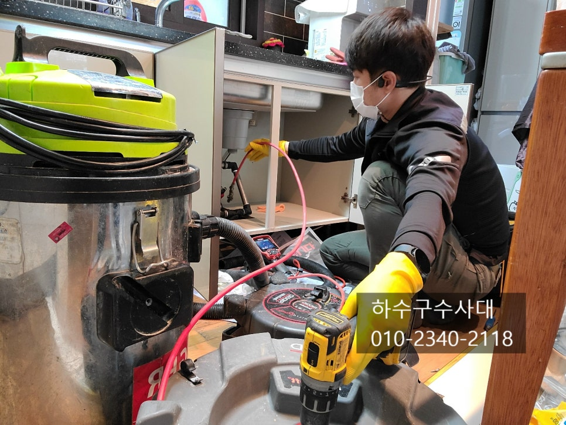
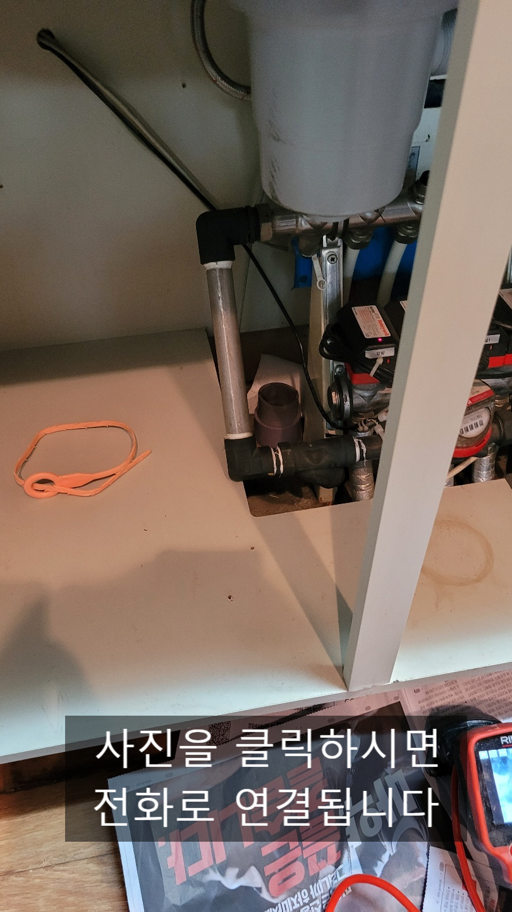
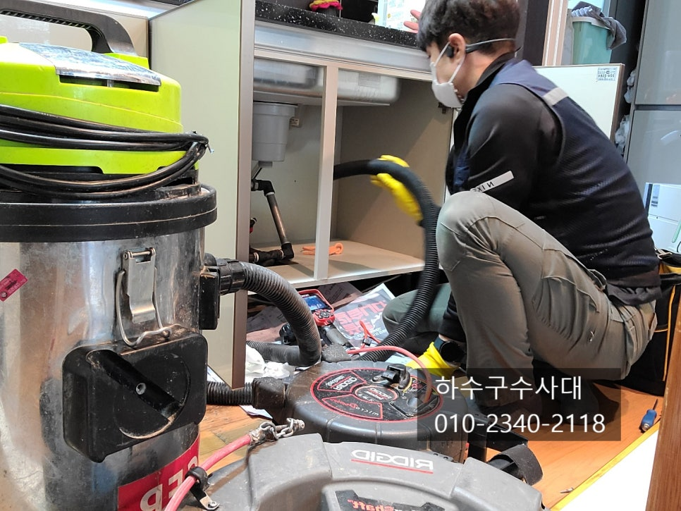
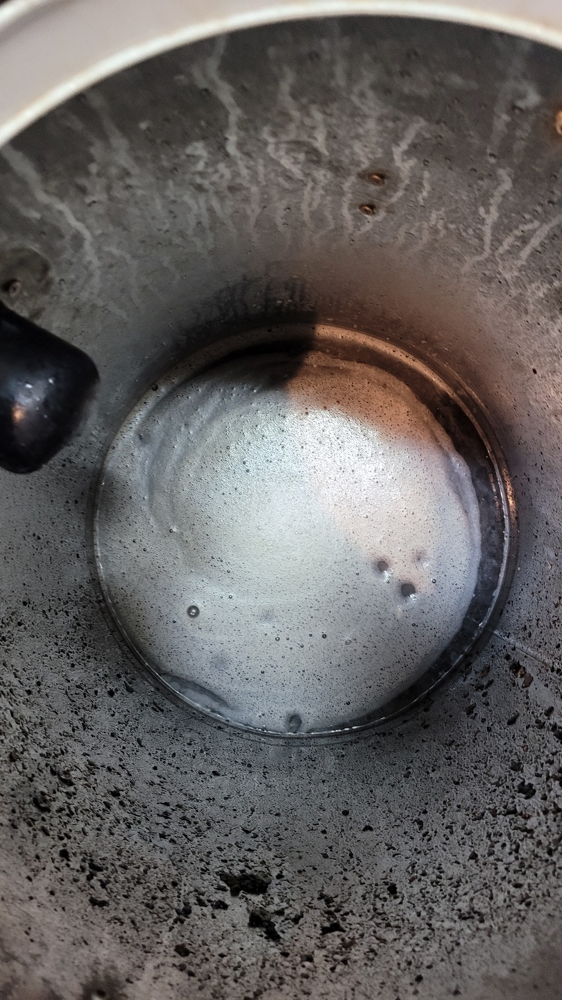
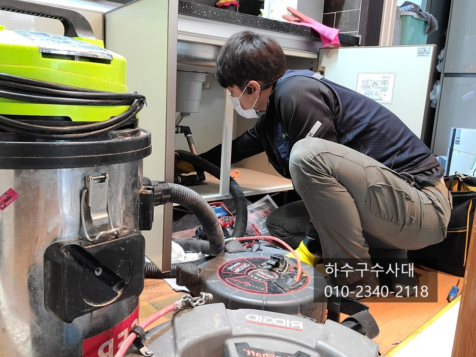
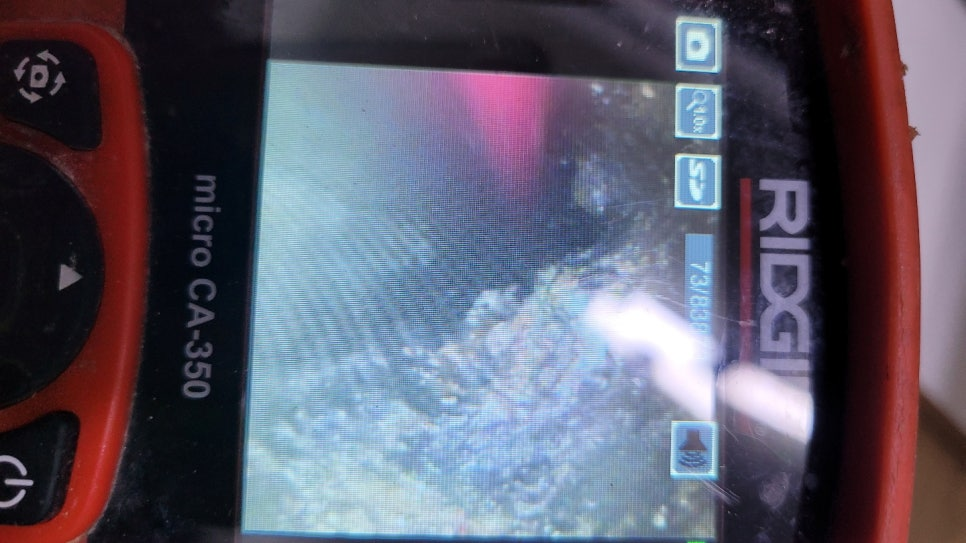
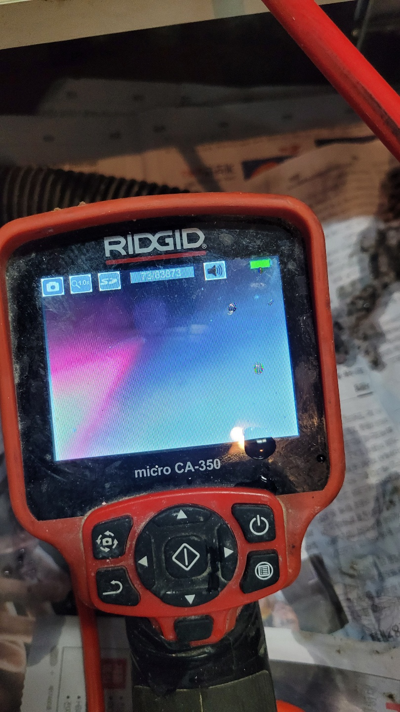

🏠 영통구싱크대막힘 광교 이의동 하수구막힘
용인 이의동 싱크대막힘 전문 시공 후기

📋 작업 개요
- 위치: 용인 이의동, 이의동, 용인
- 서비스 유형: 싱크대막힘, 변기막힘, 하수구막힘, 배관막힘, 누수수리, 역류해결, 뚫는업체
- 작업 일시: 2021. 12. 16. 23:16
- 업체명: 하수구수사대 (010-5615-2118)
🔍 문제 상황
영통구싱크대막힘 광교 이의동 하수구막힘
안녕하세요
"하수구수사대" 인사드립니다.
가정집에서 일상적으로 하수구가 막혀
물을 쓰지 못하면 많은 불편함이 생기게 마련인데요
욕실 하수구가 막히면 씻지 못할것이고
세탁실 하수구가 막히면 빨래를 못하고
변기가 막히면 생리현상을 처리하지 못하고
싱크대하수구가 막히면 식사준비에 큰 차질이
생기는데요 이처럼 하수구가 막히거나 잘 내려가지
않는다면 너무 답답할 것입니다.
오늘은 싱크대하수구가 막혀 역류한 현장을 다녀왔는데요
고객님께서 직접 해보려고 하셨지만 하수구 깊은곳에서
막혀 해결할수가 없어 "하수구수사대"에 연락을 주셨습니다.
보통 싱크대하수구가 막히면 고객님들께서 직접
뜨거운물을 부으시거나 펑크린,뚜러펑 등의
배관세정제를 넣거나 또는 철물점에서 판매하고 있는
뚫는 수동스프링으로 뚫어보려고 하시는데요

🔎 원인 분석
💡 전문가 진단: 정밀 진단 장비를 사용하여 슬러지의 고착 여부를 판명하고 타격/세척 작업을 실시했습니다.
해결이 가끔 되기도 하지만 보통은 쉽지 않을 겁니다.
가끔 뚫렸더라도 또 막히는 경우가 많답니다.
싱크대하수구는 대부분 기름슬러지가 원인인데요
배관에 동맥경화 걸린것처럼 슬러지가 배관 위쪽에
붙어있고 슬러지덩어리가 조금씩 무너지면서
막히는경우가 대부분입니다.
이미 기름덩어리가 되면 펑크린이나 세정제를
넣어 덩어리가 무너져 더 막힘증상이 심해지는 경우도
있으니 조심하여야 합니다.
고객님들께서 설거지를 할때 기름은 되도록 휴지로
닦아내고 설거지를 하는데 왜 배관이 기름이 들어가느냐고
물어보시기도 하는데요 아무리 기름을 닦아낸다해도
설거지를 하면서 단 1%의 기름도 하수구에 흘려보내지
않을수는 없을것입니다. 그리고 가장 큰 원인은 하수구배관
구배 즉 기울기 원인이 크다고 할수 있습니다.
대부분 기름덩어리가 많은 곳은 대부분 배관에
물이 고여있는 구간이 있답니다.
배관이 물이 고여있다면 설거리를 하고 흘러가는 기름이
물을 잠그면 구배가 좋지않은곳이 기름이 떠있고

🔧 작업 과정
조금씩 쌓이다보면 딱딱한 슬러지가 되는데
아무래도 딱딱하게 기름덩어리가 되려면
굉장히 오랜시간이 걸린답니다.
오래된 아파트의 비해 요즘 지어지는 아파트들의
싱크대하수구가 더 잘막히는데 이유는 싱크대구조 때문이에요.
오래된 아파트의 싱크대 배관구조는 단순하고 짧아 일직선으로
가서 수직으로 떨어지는 반면 요즘 지어지는 아파트 싱크대하수구 구조는
1번또는 2~3번 이상 꺽이고 배관이 길다보니 물의 흐름도 원활하지
않고 기름기 배출도 더디기 때문입니다.
인테리어 효과때문에 싱크대위치가 바뀌다 보니 구조가 바뀌게
되는데 하수구배관은 오히려 관리에 많은 신경을 쓰지 않으면
쉽게 막히게 된답니다.
싱크대하수구는 특히나 신경써야 될 부분이 누수입니다.
싱크대밑에 바닥은 욕실처럼 방수가 되어있지 않다보니
하수구에서 물이 역류하게 되면 밑에집 천장으로
물이 새어 들어갈수 있기때문에 더욱더 조심해야해요.
그래서 내시경카메라를 보면서 완벽하게 작업하는 것을
추천드리고 기름기는 완전히 제거해주는것이 좋아요.
하수구배관에 기름덩어리를 모두 제거했다면
이제 관리가 중요한데요 내시경카메라로 배관길이와
구조를 파악하고 어떻게 관리를 해야하는지 계획을
세워보는 것도 좋은 방법입니다.
기름이 쌓이지 않게 하기위해 설거지를 하기전
기름을 휴지로 닦아내고 따뜻한물을 틀어놓고
설거지를 하고 설거지 마무리엔 물을 설거지통에
받아서 한번에 내려보내주고 한달에 한번쯤은
취침전에 하수구에 펑크린을 부어주시는게 좋아요.
작업 마무리엔 싱크대에 물을 받아서 내려보는데요
이때 싱크대호스 연결부위에서 물이 새진 않는지


✅ 작업 완료
체크도 해주는 것이 좋습니다.
영상처럼 하수구배관이 뻥~~! 뚫려있다면 소리부터가
틀린데요 구멍이 좁아져 있다면 물을 받아서 내릴때
물이 조금씩 역류될수도 있으니 각 가정접에서
테스트를 해보는것도 좋은 방법입니다.
"하수구수사대"는 수도권 전지역에서
활동중이며 궁금한점이 있으시다면 언제든지
연락주시기 바랍니다^^




⚠️ 베란다 누수 및 방수 관리 방법
- ✅ 비가 많이 올 때 창틀 주변이나 아래층 천장에 얼룩이 생기는지 정기적으로 확인해 보세요.
- ✅ 우수관 주변 실리콘 마감이 들뜨거나 깨진 틈새가 있는지 손상 여부를 수시로 체크하세요.
- ✅ 베란다 바닥 타일의 줄눈(메지)이 소실되면 그 틈으로 물이 침투하여 누수가 유발됩니다.
- ✅ 누수 의심 증상 발견 시 방치하면 아래층 손실이 커지므로 즉시 전문가의 진단을 받으십시오.
💡 핵심 정리
- 확실한 장비 작업(내시경 점검 및 샤프트 스케일링)으로 원인을 뿌리 뽑습니다.
- 작업 후 1년 이내에 동일한 부위 재발 시 100% 무상 A/S 서비스를 보장합니다.
- 서울 · 경기 · 인천 전 지역에 24시간 언제든 긴급 출동할 수 있도록 항시 대기 중입니다.
❓ 자주 묻는 질문 (FAQ)
🚨 용인 이의동 싱크대막힘 문제로 고민이신가요?
정확한 원인 진단과 확실한 시공으로 재발 없는 해결을 약속드립니다.
24시간 긴급 출동 | 서울 · 경기 · 인천 전지역 | 1년 내 재발 시 무상 A/S